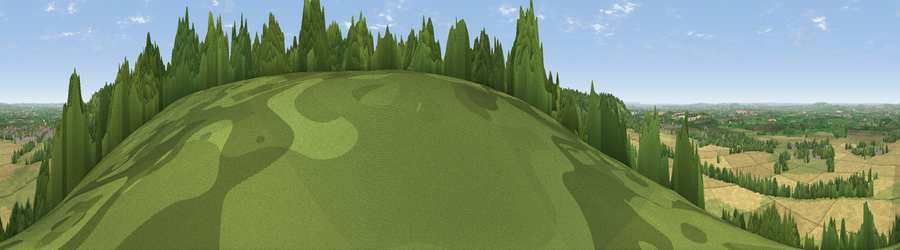

Viewpoint near Kingston Blount
#7187 in England · top 5% of its area beats it · near Kingston BlountThe view, rendered

A 360° render of this exact spot computed from the terrain model, tree cover and land cover — summer colours, afternoon light, calibrated against photographs of famous viewpoints. Real trees, hedges and buildings will differ in detail.
The panorama
Grey silhouette: terrain skyline in each direction (720 bearings, Earth curvature and refraction included). Dashed green: skyline with trees (+15 m) and buildings (+8 m) as obstacles. Blue strip: how far the ground is visible on each bearing.
Where the view opens
Wedge length = distance to the farthest visible ground on that bearing (vegetation-aware). Rings at 10, 25 and 50 km.
What fills the view
41% cropland · 36% grassland · 21% woodland · 2% built-up
Angular shares of the visible panorama (visual magnitude), not map area. Landscape diversity 0.49 (0–1 Shannon).
Key numbers
More beautiful places nearby
The staircase of upgrades: each row has a higher view potential than everything closer. Driving times are estimates from straight-line distance, calibrated against real road routing — check an actual route before setting out.
| Place | Direction | Drive | Score |
|---|---|---|---|
| Viewpoint near Kingston Blount | NE · 1 km | ~3 min | 70.1 |
| Viewpoint near Lewknor | WSW · 2 km | ~6 min | 74.4 |
| Coombe Hill Monument | NE · 13 km | ~24 min | 75.5 |
| Viewpoint near Woolstone | WSW · 46 km | ~67 min | 76.7 |
| Martinsell viewpoint | WSW · 66 km | ~89 min | 77.3 |
| Broadway Hill | WNW · 74 km | ~97 min | 77.7 |
| Viewpoint near Buriton | S · 78 km | ~102 min | 80.0 |
| Beacon Hill | S · 80 km | ~104 min | 85.8 |
51.67783, -0.92031 · source: screening · position refined by local search. Computed location — check access rights before visiting.